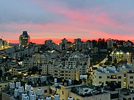

Economy of the State of Palestine
|  Ramallah, the financial hub of Palestine | |
| Currency | None de jure. Currencies generally used in Palestine include:
|
|---|---|
| Calendar year | |
Trade organisations | OIC, Group of 77 |
Country group |
|
| Statistics | |
| Population | |
| GDP | $10 billion (2012 est.) |
GDP growth |
|
GDP per capita |
|
GDP by sector |
|
| 2.7% (June 2013)[8] | |
Population below poverty line | 25.8% (2011 est.)[9] |
Labour force | |
Labour force by occupation |
|
| Unemployment | 27.5% (Q1 2013)[14] |
Main industries | Cement, quarrying, textiles, soap, olive-wood carvings, mother-of-pearl souvenirs, food processing |
| External | |
| Exports | $720 million (2011)[15] |
Export goods | Olives, fruit, vegetables, limestone, citrus, flowers, textiles |
Main export partners |
|
| Imports | $4.2 billion (2011)[15] |
Import goods | Food, consumer goods, construction materials |
Main import partners | |
| Public finances | |
| $4.2 billion (June 2013)[17] | |
| $1.3 billion (13% of GDP; 2012 est.)[18] | |
| Revenues | $2.2 billion (2012 est.) |
| Expenses | $3.54 billion (2012)[18] |
| $464 million (march 2016)[19][20] (163nd) | |
| [21][22] All values, unless otherwise stated, are in US dollars. | |
{kind=link}
The economy of the State of Palestine refers to the economic activity of the State of Palestine. Palestine receives substantial financial aid from international donors, including governments and international organizations. In 2020, the inflation rate of -0.7% and unemployment rate was 25.9%.[23] While exports were recorded at US$ 1 billion, with an import value of US$ 6 billion.[23] Contributors to the national economy is service sector (47%), wholesale and repair (19%), manufacturing (12%), agriculture (7%), finance and banking (3%), construction (5%), information technology (5%) and transportation sector (2%).[23]
This aid is crucial for supporting the Palestinian Authority and funding public services and development projects. Palestinians working abroad send money back to their families in Palestine. These remittances provide a significant source of income for many households. Palestinian economy relies heavily on donations and international aid from various sources, including UNRWA, Qatar, Turkey, the European Union, and non-governmental organizations.[24][25] Contribution to the economy also comes from remittances sent by the Palestinian diaspora.[26][27] Gazans experience additional difficulties as they are subjected to a siege, with Israel controlling the movement of people and goods in and out of Gaza. Nonetheless, there are limited business opportunities available in Gaza. Contrastingly, the West Bank provides Palestinians with more diverse opportunities.[28] Some individuals own businesses in tourism-driven areas such as Bethlehem and Jerusalem, as tourism serves as a significant source of income.[29][30] Others engage in various types of enterprises in cities like Ramallah and Hebron, ranging from trading to construction and IT services.[31][32] Furthermore, approximately 100,000 Palestinians find employment in Israeli companies as low-cost labor, earning significantly less than the average Israeli worker.
While trade is restricted due to political factors, Palestine does engage in some export activities. Palestinian products, such as agricultural goods and traditional crafts, are exported to regional and international markets. Despite the challenges, tourism plays a role in the Palestinian economy. The historical and cultural significance of places like Bethlehem and Jerusalem draws tourists. Agriculture remains a crucial sector, with Palestinians cultivating crops, producing olive oil, and raising livestock. Some Palestinians work in various service industries, including education, healthcare, and technology. Palestine hosts numerous international non-governmental organizations (NGOs) and humanitarian agencies, which contribute to the local economy and provide employment.
History
GDP per capita in the Palestinian territories rose by 7% per year from 1968 to 1980 but slowed during the 1980s. Between 1970 and 1991 life expectancy rose from 56 to 66 years, infant mortality per 1,000 fell from 95 to 42, households with electricity rose from 30% to 85%, households with safe water rose from 15% to 90%, households with a refrigerator rose from 11% to 85%, and households with a washing machine rose from 23% in 1980 to 61% in 1991.[33]
Economic conditions in the West Bank and Gaza Strip, where economic activity was governed by the Paris Economic Protocol of April 1994 between Israel and the Palestinian Authority, deteriorated in the early 1990s. Real per capita GDP for the West Bank and Gaza Strip (WBGS) declined 36.1% between 1992 and 1996 owing to the combined effect of falling aggregate incomes and robust population growth. The downturn in economic activity was due to Israeli closure policies in response to terrorist attacks in Israel, which disrupted previously established labor and commodity market relationships. The most serious effect was the emergence of chronic unemployment. Average unemployment rates in the 1980s were generally under 5%; while by the mid-1990s it had risen to over 20%. After 1997, Israel's use of comprehensive closures decreased and new policies were implemented. In October 1999, Israel permitted the opening of a safe passage between the West Bank and the Gaza Strip in accordance with the 1995 Interim Agreement. These changes in the conduct of economic activity fueled a moderate economic recovery in 1998–99.
As a result of the Israeli blockade, 85% of factories were shut or operated at less than 20% capacity. It is estimated that Israeli businesses lost $2 million a day from the closure while Gaza lost approximately $1 million a day.[34] The World Bank estimated the nominal GDP of the territories at US$4,007,000 and of Israel at US$161,822,000. Per capita these numbers are respectively US$1,036 and US$22,563 per year.
Prosperity
During the worldwide recession of the 1930s, Palestine, including its Arab population, suffered severe economic hardships.[35] The global economic downturn had an impact on the region, leading to economic decline and increased unemployment.[35] However, by the end of World War II, Palestine had experienced a significant level of prosperity and was considered one of the most advanced countries in the Middle East in terms of economic development.[35] This prosperity was attributed to several factors.[35] Firstly, during the war, Palestine served as a center of British communications, which brought numerous benefits to the economy.[35] The region benefited from contracts in transport, military construction, and supply, as well as the establishment of a large oil refinery in Haifa.[35] These activities created employment opportunities and stimulated economic growth.[35] Additionally, agricultural exports, particularly citrus fruit, saw a marked increase during this period.[35] The disruption of supplies from other parts of the Mediterranean due to the war, especially the actions of the Germans, created a higher demand for Palestinian citrus products.[35] This presented an opportunity for both Arab and Jewish citrus producers to take advantage of the increased demand and contribute to the economic growth.[35] Although many contracts awarded by the British Mandatory authorities during this period went to the new Jewish immigrants, Arab Palestinians also benefited from the economic opportunities.[35] Arab Palestinians were able to provide cheaper labor, which made them attractive for employment in various sectors.[35] They found employment in the railroads, large military construction projects, and government departments like the police.[35]
During the war, Palestine experienced a period of economic prosperity, which coincided with new forms of investment and trade that connected the region and its entrepreneurs to the global market.[35] The profits generated during this time were invested in various financial instruments such as shares, government bonds, and commodity stocks. After the dispersion of people in 1948, some individuals were able to recover a portion of their wealth through these investments.[35] The passage suggests that data collected by the Mandatory government provides estimates of the wealth held in Palestine during that period.[35] According to the data, the total ownership of capital in the country in 1945 amounted to 281 million Palestinian pounds.[35] Of this total, approximately 47 percent (132.6 million pounds) was owned by the Arab community.[35] The majority of this wealth (74.8 million pounds) was invested in rural landholdings that could not be transferred abroad.[35] However, there were other assets, such as investments in foreign stocks and shares, which were in a form that could be recovered by those who went into exile.[35] These foreign liquid assets amounted to just over 39 million pounds.[35] Additionally, Arab banks in Palestine held 7 million pounds in bank deposits, and another 3 million pounds were deposited in the Ottoman Bank or the local branch of Barclays Bank, some of which was recovered through international litigation in the early 1950s.[35]
A significant portion of the bank deposits held in Arab banks in Palestine, amounting to approximately 10 million pounds, was transferred to Jordan.[35] This transfer occurred as a result of the mass displacement of Palestinians during the 1948-1949 Arab-Israeli war, with many seeking refuge in Jordan.[35] Furthermore, it mentions that at least 1.5 million pounds in the form of banknotes was brought into the country prior to the abolition of the Palestinian currency.[35] This indicates that individuals who left Palestine took physical banknotes with them as they sought refuge or migrated to other regions.[35] At least 1.5 million pounds in the form of banknotes was transferred to Syria.[35] Smaller amounts being sent to Egypt and Iraq.[35] These transfers suggest that some individuals who left Palestine took physical banknotes with them to these countries.[35]
Economic rise (1970—2000)
.jpg){kind=link}
{kind=link}
During the 1970s and subsequent years, a considerable number of Palestinians sought employment opportunities in Israel.[36] This labor integration provided income and remittances, which had positive effects on the Palestinian economy.[36] Palestinian workers played a significant role in various sectors of the Israeli economy, such as construction, agriculture, and manufacturing.[36] While there were some economic benefits from labor integration, the overall economic disparities between Israel and the occupied Palestinian territories persisted. Palestinians faced limited access to resources, markets, and capital, which hindered their economic development.[36]
Integration into the Israeli labor market provided Palestinians with access to job opportunities that were not readily available in the occupied territories. Palestinians found employment in various sectors, including construction, agriculture, manufacturing, and services. This helped alleviate unemployment and provided a source of income for Palestinian workers and their families. The General Federation of Trade Unions, representing Palestinian workers, was founded to advocate for their rights and interests.
Palestinian exports peaked in 1981 followed by a decline through the 1990s. In the same time period imports nearly doubled, increasing a trade deficit of 35% of GDP in 1981 to a deficit of 45% of GDP in 1996.[36] The first Intifada, a Palestinian uprising against Israeli occupation, which took place from 1987 to 1993, had a profound impact on the Palestinian economy.[36] The Intifada led to widespread disruptions, closures, and restrictions imposed by Israel, which greatly affected economic activities and livelihoods. In 1991, the invasion of Kuwait and resulting Gulf War affected the Palestinian economy. The Madrid Conference, held that same year, improved economic collaboration between the Arab countries and Israel.[36]
The Oslo Accords, signed in the 1990s, led to the establishment of the Palestinian Authority (PA) and limited self-governance in parts of the West Bank and Gaza. The PA took on responsibilities in areas such as trade, investment, and public services.[36] However, the overall impact on the Palestinian economy was mixed, as the peace process faced setbacks and the Israeli occupation persisted.[36] In 1994, The Paris Protocol was signed, outlining economic relations between Israel and the PA, including provisions for labor movement and employment. Next year, the Israeli government imposed restrictions on the movement of Palestinian workers within Israel due to security concerns.[36] The PA assumed control over some economic sectors, including tourism, trade, and investment by 1995.[36] Until 1999 the Palestinian economy experienced a period of relative growth and stability with increased international aid and improved economic indicators.[36]
For 30 years, Israel permitted thousands of Palestinians to enter the country each day to work in construction, agriculture and other blue-collar jobs. During this period, the Palestinian economy was significantly greater than the majority of Arab states.[37] Until the mid-1990s, up to 150,000 people—about a fifth of the Palestinian labor force—entered Israel each day. After Palestinians unleashed a wave of suicide bombings, the idea of separation from the Palestinians took root in Israel. Israel found itself starved for labor, and gradually replaced most of the Palestinians with migrants from Thailand, Romania and elsewhere.[38][39]
Intifada and recovery (2000–present)
In 2005, the PNA Ministry of Finance cited the Israeli West Bank barrier, whose construction began in the second half of 2002, as one reason for the depressed Palestinian economic activity.[40] Real GDP growth in the West Bank declined substantially in 2000, 2001, and 2002, and increased modestly in 2003 and 2004.[41] The World Bank attributed the modest economic growth since 2003 to "diminished levels of violence, fewer curfews, and more predictable (albeit still intense) closures, as well as adaptation by Palestinian business to the contours of a constrained West Bank economy". Under a "disengagement scenario" the Bank predicted a real growth rate of −0.2% in 2006 and −0.6% in 2007.[42]
In the wake of Israel's unilateral disengagement from Gaza, there were shortages of bread and basic supplies due to closure of the al Mentar/Karni border-crossing into Israel. Israel's offer to open other crossings was turned down by the Hamas-run Palestinian authority.[43]
Following the January 2006 legislative elections, decisively won by Hamas, the Quartet (apart from Russia) cut all funds to the Palestinian Authority led by prime minister Ismail Haniyah (Hamas). The PA had a monthly cash deficit of $60 million-$70 million after it received $50 million – $55 million a month from Israel in taxes and customs duties collected by Israeli officials at the borders. After the elections, the Palestinian stock market fell about 20%, and the PA exhausted its borrowing capacity with local banks.[44] Israel ceased transferring $55 million in tax receipts to the PA. These funds accounted for a third of the PA's budget and paid the wages of 160,000 Palestinian civil servants (among them 60,000 security and police officers). The United States and the European Union halted direct aid to the PA, while the US imposed a financial blockade on PA's banks, impeding the transfer of some of the Arab League's funds (e.g. Saudi Arabia and Qatar).[45] In May 2006, hundreds of Palestinians demonstrated in Gaza and the West Bank demanding payment of their wages. Tension between Hamas and Fatah rose as a result of this "economic squeeze" on the PA.[46]
In 2009, the Israeli military removed its checkpoint at the entrance of Jenin in a series of reductions in security measures.[47] In September 2012, EU activists stated that the Palestinian economy "lost access to 40% of the West Bank, 82% of its groundwater and more than two-thirds of its grazing land" due to the occupation and settlement construction.[48]
The first planned Palestinian city named Rawabi is under construction north of Ramallah, with the help of funds from Qatar.[49] In 2013, commercial trade between Israel and the Palestinian territories was valued at US$20 billion annually.[50]
Sectors
Agriculture
Agriculture is a mainstay in the economy. The production of agricultural goods supports the population's sustenance needs and fuels Palestine's export economy.[51] According to the Council for European Palestinian Relations, the agricultural sector formally employs 13.4% of the population and informally employs 90% of the population.[51] Around 183,000 hectares of land in the Palestinian territories are cultivated, of which around half is used for olive production.[52] Olive products earn more in export income than any other agricultural crop.[52]
Over the past 10 years, unemployment rates in Palestine have increased and the agricultural sector became the most impoverished sector in Palestine.
Palestinian agriculture suffers from numerous problems, blockades to exportation of produce and importation of necessary inputs, widespread confiscation of land for nature reserves as well as military and settler use, confiscation and destruction of wells, and physical barriers within the West Bank.[53] Because the root of the conflict is with land, the disputes between Israel and Palestine are well-manifested in the agriculture of Palestine.
High tech
During the 2000s, a high-tech sector emerged in the Palestinian territories, supported by its proximity to Israel, and by 2013, 4,500 Palestinians worked in the IT sector, specializing in software outsourcing (including outsourced work from Israeli companies), telecommunication development and manufacturing equipment.[54] The Palestinian IT sector grew from 0.8% of GDP in 2008 to 5% in 2010.[55] The industry has seen a 64% increase in foreign business since 2009. The majority of Palestinian IT companies are concerted in the city of Ramallah north of Jerusalem.[56][57]
Since 2010, Israeli high-tech companies have begun to employ Palestinian engineers. To date, most of them are outsourced workers, but Mellanox, a computer hardware firm, plans to hire 15–20 Palestinian engineers as regular employees.[58] Joint economic cooperation between Israelis and Palestinians officials has experienced growth over the past years. Starting in 2008, Cisco Systems began a concerted effort to jump-start the nascent Palestinian IT sector with a holistic ecosystem approach, encompassing venture capital, private equity, capacity building and direct outsourcing to Palestinian companies. The company invested $15 million toward that end and drew in other major international investors and donors, including Microsoft, HP and Google. The Palestinian IT sector has since grown from 0.8% of GDP in 2008 to 5% in 2010.[59]
In May 2018, the World Bank published a major report into the Palestinian technology sector entitled, "Tech startup ecosystem in West Bank and Gaza."[60] According to the report, as of early 2017, there were 241 active tech start-ups in Palestinian Territories, which has created a total of 1,247 jobs.[60] The report also recorded 51 active investors in Palestinian tech companies (around 75 percent angel investors and 25 percent venture capital firms). Among the major VC firms listed are Sadara Ventures, Ibtikar Fund and Oasis500.[60] Venture capital firms reported having invested just under US$150 million in over 40 Palestinian tech companies by 2017. The report also recorded 20 start-up accelerator programs, 19 of which are in the West Bank, and one, Gaza Sky Geeks, in the Gaza Strip.[60] Today Palestine is known as the "Silicon Valley of the NGOs".[citation needed]
Traditional industries
A wide variety of handicrafts, many of which have been produced by Arabs in Palestine for hundreds of years, continue to be produced today. Palestinian handicrafts include embroidery work, pottery-making, soap-making, glass-making, weaving, and olive-wood and Mother of Pearl carvings, among others.[61][62] Some Palestinian cities in the West Bank, particularly Bethlehem, Hebron and Nablus have gained renown for specializing in the production of a particular handicraft, with the sale and export of such items forming a key part of each city's economy.
Stonecutting is a traditional source of income for the Palestinian economy. The annual average output per worker in the stone industry is higher than in any other sector. There are 650 stone production outlets in the West Bank, 138 of them in Beit Fajjar. The quarried material is cut into a rich range of pink, sand, golden, and off-white bricks and tiles known as Jerusalem stone.[63]
Tourism
{kind=link}
In 2010, 4.6 million people visited the Palestinian territories, compared to 2.6 million in 2009. Of that number, 2.2 million were foreign tourists while 2.7 million were domestic.[64] This number of international visits is misleading, however, since most tourists come for only a few hours or as part of a day trip itinerary. In the last quarter of 2012 over 150,000 guests stayed in West Bank hotels; 40% were European and 9% were from the United States and Canada.[65] Major travel guides write recently that "the West Bank is not the easiest place in which to travel but the effort is richly rewarded."[66]
The Palestinian Authority and Israeli tourism ministries have attempted to work together on tourism in the Palestinian territories in a Joint Committee.[67] Recent cooperation to share access to foreign tourists has not proven successful in Palestine for many reasons relating to the occupation.[68] Israel controls the movement of tourists into the West Bank.[69] Foreign tourism is presently restricted to East Jerusalem and the West Bank, following the August 2013 indefinite closing of the Rafah crossing located between Egypt and the Hamas controlled Gaza Strip.[70] There is essentially no tourist flow to Gaza since 2005 because of the ongoing Israeli military land, air, and sea blockade.
In 2013 Palestinian Authority Tourism minister Rula Ma'ay'a stated that her government aims to encourage international visits to Palestine, but the occupation is the main factor preventing the tourism sector from becoming a major income source to Palestinians.[71] There are no visa conditions imposed on foreign nationals other than those imposed by the visa policy of Israel. Access to Jerusalem and the West Bank is controlled by the Government of Israel and access to Gaza is controlled by Hamas. Entry to the occupied Palestinian territories requires only a valid international passport but entry to Israel may be denied for Palestinians or Arabic visitors. In October 2009, a new project got underway promoting tourism and travel between the two areas. New business efforts and tourist attractions have been initiated in Jenin.
A large number of international brands operates their hotels in the Palestinian territories of both the West Bank and the Gaza Strip. These includes Intercontinental Jacir Palace, Seven Arches Hotel Intercontinental, Marriott Gaza (later Al-Mashtal) and Millennium Palestine Ramallah Hotel.[72] In 1995, Marriott International proposed to construct a business center-cum-luxury hotel in Gaza. The project was later changed to another hotel, in the same city.
Oil and gas
The presence of oil and gas reserves in Palestine has become a contentious issue, with some advocates suggesting that these fossil fuel resources are influencing Israel's attacks on the region.[73] According to a 2019 U.N. report, it is estimated that over 3 billion barrels of oil exist off the coast and beneath the occupied lands of Palestine.[73] Additionally, the Levant Basin in the Mediterranean is believed to hold around 1.7 billion barrels of oil, with another 1.5 billion barrels estimated to lie beneath the occupied West Bank area.[73] However, under Israeli occupation, Palestinians are not allowed to drill for oil and gas or develop their independent energy systems, including solar energy.[73] Meanwhile, Israel has been actively claiming these resources for itself, approving licenses for companies to explore for more offshore gas fields.[73] The Israeli government is also interested in building a pipeline to export gas to European nations, particularly as Europe seeks alternative energy providers due to the ongoing conflict between Russia and Ukraine.[73]
Many advocates argue that foreign interests in extracting these resources from Palestinian lands are contributing to the potential genocide faced by Palestinians.[73] Throughout history, foreign policy in the Middle East has often revolved around fossil fuels, and this situation seems no different.[73] The struggle between Israelis and Palestinians dates back to colonial times, with tensions and conflicts fueled by the desire for community, safety, and control of the land.[73] The discovery of oil in the region further complicated the situation, as world powers sought to secure access to this crucial commodity.[73] The intertwined history of oil and the creation of modern Middle Eastern states makes it difficult to separate conflicts in the region from the influence of oil and gas resources.[73] The presence of billions of barrels of oil in Palestine, combined with the geopolitical interests of various actors, adds another layer of complexity to the Israel-Palestine conflict.[73] When it comes to the presence of oil and gas reserves in Palestine, there is an ongoing conflict between Israel and Palestine over the ownership and exploitation of these resources.[73] In 1999, a gas field was discovered about 20 miles off the coast of Gaza.[73] However, negotiations between Israel and Palestine to divide these resources were disrupted by the second intifada, or Palestinian uprisings, which began in 2000.[73]
Under international law, the oil and gas resources in Palestine should belong to the occupied territory and not the occupying power (Israel).[73] However, Israel has been benefiting from the oil and gas reserves beneath Palestinian lands and waters.[73] Palestine has been unable to access these resources, resulting in a loss of billions of dollars of economic potential.[73] Moreover, there are concerns about the environmental impact of fossil fuel extraction, and Palestinian activists are pushing for a focus on renewable energy instead.[73] The international community's complicity in the ongoing Israeli occupation and the conflict in Gaza is seen by some as intricately tied to capitalist interests and the pursuit of profit.[73] The history of colonialism and the extraction of oil resources in the Middle East is seen as part of the wider context of the Israel-Palestine conflict.[73] While some argue that fossil fuels have a marginal role in the conflict, others believe that religious ideology, geopolitical strategies, and access to trading routes play a bigger role.[73] Overall, the conflict in Palestine and the pursuit of oil and gas resources have deep historical and geopolitical roots that contribute to the ongoing tensions in the region.[73]
Palestine holds massive potential reserves of oil and gas.[74] Over 3 billion barrels (480,000,000 m3) of oil are estimated to exist off the coast and beneath occupied Palestinian lands.[74][75] The Levant Basin holds around 1.7 billion barrels (270,000,000 m3) of oil, with another 1.5 billion barrels (240,000,000 m3) barrels beneath the occupied West Bank area.[75] Around 2 billion barrels (320,000,000 m3) of oil reserves are believed to exist in shore of the Gaza Strip.[75][76] According to a report by the UNCTAD, around 1,250 billion barrels (1.99×1011 m3) of oil reserves are in the occupied Palestinian territory of the West Bank, probably the Meged oil field. As per the Palestinian Authority, 80% of this oil field falls under the lands owned by Palestinians.
Masadder, a subsidiary of the Palestine Investment Fund is developing the oilfield in the West Bank.[76] Block-1 field, which spans an area of 432 square kilometres (167 sq mi) from northwest Ramallah to Qalqilya in Palestine, has significant potential for recoverable hydrocarbon resources.[76][77] It is estimated to have a P90 (a level of certainty) of 0.03 billion barrels (4,800,000 m3) of recoverable oil and 6,000,000,000 cubic feet (170,000,000 m3).[76] The estimated cost for the development of the field is $390 million, and it will be carried out under a production sharing agreement with the Government of Palestine.[76][78][79] Currently, an initial pre-exploration work program is underway to prepare for designing an exploration plan for approval, which will precede the full-fledged development of the field.[76]
Natural gas in Palestine is mostly found in Gaza Strip.[78] Gaza Marine is a natural gas field, located around 32 kilometres (20 mi) from the coast of the territory in the Mediterranean shore.[80] It holds gas reserves ranging between 28 billion cubic metres (990 billion cubic feet) to 32 billion cubic metres (1.1 trillion cubic feet).[81] These estimates far exceed the needs of the Palestinian territories in energy.[82] The gas field was discovered by the British Gas Group in 1999.[83] Upon the discovery of the gas field, it was lauded by Yasser Arafat as a "Gift from God". A regional cooperation between the Palestinian Authority, Israel and Egypt were signed for developing the field and Hamas also gave approval to the Palestinian Authority.[84][85] However, since the ongoing war in Gaza, this project have been delayed.[85]
Infrastructure
Communications
The World Bank estimated in 2016 that restrictive measures placed by Israel on telecommunication operators in the West Bank have had a notable negative impact on the development of the Palestinian telecommunications networks, which is sustaining losses in the range of $1 billion. These restrictive measures include the denial to operate in 60% of the West Bank under Israeli military administration (Area C), limitations on the importation of technology for ICT companies, requiring Palestinian operators to access international links via a company with Israeli registration, delaying in the provision of mobile broadband, the failure to set in place an independent regulator for the sector in the territories, and Israeli operators who lack appropriate authorizations who continue to operate in the Palestinian market.[86]
Transport
Water supply and sanitation
By sub-region
West Bank
In 2007, the economy in the West Bank improved gradually. Economic growth reached about 4–5% and unemployment dropped about 3%. Israeli figures indicated that wages in the West Bank rose more than 20% in 2008 and trade rose about 35%. Tourism in Bethlehem increased to about twice its previous levels, and tourism increased by 50% in Jericho.[87] Life expectancy is 73.4, placing the territories 77th in the world, compared with a life expectancy of 72.5 in Jordan, 71.8 in Turkey, and 80.7 in Israel.[88] Car sales in 2008 were double those of 2007.[89] The International Monetary Fund report for the West Bank forecast a 7% growth rate for 2009.
The Bethlehem Small Enterprise Center opened in early 2008. Funded by Germany, the center has helped to promote computer literacy and marketing skills.[87]
{kind=link}
In 2009, efforts continued to build Palestinian local institutions and governments from the ground up. Much of this work was done by Tony Blair and US General Keith Dayton. Some analysts saw this as a more substantial way to lay a groundwork for viable institutions and for local peace.[90] In August 2009, a state of the art web-based system for tracking goods coming in and out of the area by Palestinian customs was launched in partnership with the United Nations Conference on Trade and Development.[91]
In 2009, an economic "boom" began with growth reaching 8 percent, higher than in Israel or the West. However, with inflation around 9.9% that same year, real economic growth is actually negative insofar as purchasing power has decreased. Tourism to Bethlehem, which had doubled to 1 million in 2008, rose to nearly 1.5 million in 2009. New car imports increased by 44 percent. New shopping malls opened in Jenin and Nablus. As an outcome of the Palestine Investment Conference, Palestinian developers are planning to build the first modern Palestinian city, Rawabi.[92][93]
{kind=link}
In 2010, Ramallah was described as a hub of the economic activity thanks to improved security within the city, successful battle against corruption and large consumer base.[94]
In 2011, the Palestinian Planning Minister said that GDP growth was expected to reach 9%, rising to 10% in 2012 and 12% in 2013.[95]
East Jerusalem
East Jerusalem was once the business and shopping hub of the West Bank. However, since the advent of Israeli security checkpoints and the separation barrier starting over a decade ago, it has become isolated from its customer base leading to serious economic decline.[96] According to Hanna Siniora of the Palestinian-American Chamber of Commerce, the turning point was 1993. He states that since then East Jerusalem has become a closed city through isolation from the rest of the West Bank causing a loss of 50% of its business between 1993 and 2001.[97]
According to a 2012 report by the Association for Civil Rights in Israel and interviews conducted by the Forward, the decline of the economy in East Jerusalem has led to unprecedented levels of poverty, with 80% of the Palestinian population living below the poverty line. The main cause is seen as the political and physical barriers separating it from the rest of the West Bank. The ACRI report attributing the problem to "'the cumulative effects of annexation, neglect, rights violations and the completion of the separation barrier."[96] Another contributing factor to the economic decline is the housing situation.[96] The Israeli government has facilitated extensive construction for Israeli settler neighborhoods, but has severely restricted development and building for the Palestinian population.[96]
Gaza Strip
{kind=link}
According to CIA's The World Factbook, Israel's closure policy, which was extended when the Hamas administration came to power in 2007, was responsible for high levels of poverty and unemployment and a significant decline of the private sector which was heavily reliant upon export markets. Israel blamed Hamas for taking actions that led to the closure policy. A large part of the population is dependent on humanitarian assistance, primarily from the UN agencies.[98]
An easing of Israel's closure policy in 2010 resulted in an improvement in some economic indicators, but regular exports from the Gaza Strip were still prohibited.[98] According to the Israeli Defense Forces, the economy improved in 2011, with a drop in unemployment and an increase in GDP. New malls have opened, local industry is developing and the economic upswing has led to the construction of hotels and a rise in the import of cars.[99] Wide-scale development has been made possible by the unhindered movement of goods into Gaza through the Kerem Shalom Crossing and tunnels between the Gaza Strip and Egypt. The current rate of trucks entering Gaza through Kerem Shalom is 250 trucks per day. This figure fluctuates depending on the level of interference with goods being brought into Gaza from Egypt through tunnels. The increase in building activity has led to a shortage of construction workers. To make up for the deficit, young people are being sent to learn the trade in Turkey.[100]
Currency
Under the Protocol on Economic Relations, the Palestinians are not allowed to independently introduce a separate Palestinian currency. Instead, the Israeli new shekel is the main currency of the Palestinian territories.[101] In the West Bank the Jordanian dinar is also used.[102] The shekel is used for most transactions, especially retail, while the dinar is used more for savings and durable goods transactions.[1] The United States dollar is also sometimes used for savings and for purchasing foreign goods.[1] The dollar is used by the overwhelming majority of transactions overseen by the Palestinian Monetary Authority (that functions as Palestine's central bank), which only represent a fraction of the transactions conducted in Palestine or by Palestinians.[103]
In the Gaza Strip, the shekel is also the main currency,[104] though it is in short supply due to the blockade of the Gaza Strip by the PA, Israel and Egypt.
Because the Palestinian Monetary Authority does not issue its own currency, it is therefore unable to pursue an independent and effective monetary policy.[105] At the same time, the use of multiple currencies increases the costs and creates inconvenience arising from fluctuating exchange rates.[105]
Taxation
Taxation in the Palestinian territories is a complex system which may involve payment to the Palestinian Authority (PA) and/or Israel. In 2005 the PA collected approximately $34 million per month from taxes and other charges, while Israel collected about $75 million per month in tariffs on foreign imports and value added taxes (VAT) on Israeli goods and services and on average retained about $15 million for the payment of water and power bills of Palestinians, while forwarding the other $60 million to the PA.[106] Israeli collected funds account for about two-thirds of the PA's self-generated revenue,[107] which Reuters put at $100 million in December 2012.[108] Since the 2006 Palestinian legislative election and the formation of a Hamas government in the PA, Israel has regularly withheld the taxes it owes the PA.[106][108][109][110]
Employment
According to the Council for European Palestinian Relations, the agricultural sector formally employs 13.4% of the population and informally employs 90% of the population.[51] Over the past 10 years, unemployment rates in Palestine have increased and the agricultural sector became the most impoverished sector in Palestine. Unemployment rates peaked in 2008 when they reached 41% in Gaza.[111]
By Israelis
High unemployment in the Palestinian economy led about 100,000 Palestinians to work in Israel. By March 2014, about 45,000 permits were issued for work in Israel with further 25,000 issued for work in West Bank settlements. It is estimated 35,000 Palestinian work through illegal channels and without a permit. Recently[when?] the quota for permits has increased and minimum age for obtaining one was reduced from 26 to 24. Sectors in which Palestinians are employed include construction, manufacturing, commerce and agriculture.[112]
As of 2013, average daily wages in Israel and the settlements is nearly 2.2 times higher than in the private sector in the West Bank and over 4 times that in Gaza. As of 2022, Palestinian monthly minimum wage is ₪1,450, almost a quarter of the Israeli minimum wage of ₪5,300. In the West Bank, Israeli labour laws are partially applied through military enactments, and a ruling of the Supreme Court of Israel of 2007 apply the law for work done inside Israeli settlements. Yet, there have been incidents where Israeli employers did not fulfill their legal obligations to the employees by refusing to provide a paycheck or hide the number of work hours to avoid labour laws such as minimum wage or social security benefits.[112][113]
In 2014, an article published on Al-Hayat Al-Jadida, the Palestinian Authority's official daily, praised Israeli treatment of Palestinian workers. With having added benefits such as transportation, medical and pensions, Palestinians are quick to leave their Palestinian employers and work for Israelis, whenever they have the opportunity to do so. Safety rules are enforced strictly by Israeli Workers' Union and physical examinations are done by doctors. The PA has passed labour laws but do not enforce rules such as the minimum wage, annual vacations, sick leave or extra payments for overtime work.[114][115][116]
Foreign aid
In 2008, the West Bank and Gaza economies were heavily reliant on foreign aid which stood at 1.8 billion[clarification needed]. Approximately 30% of the GDP, or US$487 per Palestinian per year came from aid. Foreign aid provided essential services for nearly half of the Palestinian people, and allowed the Palestinian Authority to operate and pay its estimated 140,000 employees.[117]
In 2010, Arab states cut financial aid to the Palestinian Authority. According to the Palestinian Finance Ministry, the PA received $583.5 million in budget support by August 2010, of which only 22 percent came from Arab states. The remainder was from international donors, including the European Union and the United States. Salah Rafat, a member of the PLO Executive Committee, urged the Arab countries to honor their financial pledges.[118]
In April 2011, Salam Fayyad met with Western donors in Brussels and requested $5 billion in aid.[95]
As part of a 2013 effort to inspire peace talks between Israelis and Palestinians, US Secretary of State John Kerry proposed a $4 billion plan of private investment in the Palestinian economy.[119] The plan was described as having the potential to significantly grow the economy of the West Bank, but no specifics were provided as to what projects were envisioned, who would invest the money, or what modifications might be required in Israel's restrictions on the West Bank for the plan to work.[120] The proposal was coordinated in association with the Quartet, a Middle East peacemaking group comprising the United States, Russia, the European Union and the United Nations, for which former UK Prime Minister Tony Blair served as an envoy. The Palestinian Authority responded by indicating that it would not trade its political aspirations for economic aid, but was assured that the plan was meant as a complement to negotiations, and not as a substitute.[121][120] Peace talks failed for unrelated reasons[122] without any implementation of the proposal.
According to Jonathan Cook in an article published by CounterPunch, Israeli economist Shir Hever has estimated (2016) that at a minimum 78% of foreign humanitarian aid to Palestine finishes up in Israeli coffers. He draws the implication that foreign donor countries are thereby financing Israel's occupation.[123] In return Palestinians receive the equivalent amount in food, goods and services from Israel which is used to improve the standard of living of Palestinians.
Israeli–Palestinian relations
Commerce
Olives of Peace is a joint Israeli–Palestinian business venture to sell olive oil. Through this project, Israelis and Palestinians have carried out joint training sessions and planning.[124] The oil is sold under the brand name "Olives of Peace."[125]
[126] The two regions are planning a joint industrial zone which would bridge the border. Palestinians would produce locally-made handicrafts and sell them through Gilboa to other regions of the world. Another possible project is a joint language center, where Israelis and Palestinians would teach each other Arabic and Hebrew, as well as aspects of their cultural heritage.[127]
In 2011, bilateral trade between Israel and the Palestinian-ruled areas reached $4.3 billion, with Israeli exports to the PA amounting to $3.5 billion and Palestinian exports to Israel amounting to $816 million. According to Nader Tamimi, chair of the Association of Traditional Industries in the PA, there are regular interactions between Palestinian and Israeli businessmen.[128]
At a conference hosted by the Faculty of Business and Management at Ben-Gurion University of the Negev in 2012, Israeli and Palestinian trade experts met to discuss ways of promoting cross-border business interactions.[128]
In 2013, commercial trade between Israel and the Palestinian Authority were valued at US$20 billion annually.[50] The continuously increasing transactions led to the creation of the joint Palestinian and Israeli initiative, the Jerusalem Arbitration Center (JAC). The center will specialize as an independent institution focusing on business arbitration between Israelis and Palestinians.[50][129]
Due to the clearance crisis with Israel, the Palestinian economy was severely hit in terms of public finances, according to the World Bank's report in 2019. World Bank Acting Country Director for West Bank Gaza Anna Bjerde said, "The economy, which in 2018 saw no real growth, is now facing a severe fiscal shock because of the standoff over clearance revenue transfers." The report states, "Against a background of declining aid flows, the recent standoff stemmed from Israel’s unilateral deduction of US$138 million from the PA’s clearance revenues in 2019 to offset estimated payouts to Palestinian martyrs and prisoners' families."[130]
Conflict
In 2006, the unity of the Palestinian economy was fractured following Fatah-Hamas split prompting Israel to sever direct ties between the West Bank and Gaza. The following war in 2008–2009 destroyed most of the economic infrastructure of the Gaza Strip and left the Palestinian economy without any remaining activity and $1.4 billion in debt.[131] The Oslo Accords in 1993 aimed to prevent this, but was unable to keep the Palestinian economy from fluctuating. Currently, the Palestinian economy lives on foreign aid and customs revenue between Israel and Palestine. However, Israeli restrictions continue to hamper and fragment the Palestinian economy.[131] By 2008, 71% of the Gaza Strip's population was unemployed.[131] The import and export prosperity in Palestine was impacted by the border restrictions and constant Israeli control in the West Bank and Gaza, which also weakened the industrial and agricultural sectors.[132] In order for the Palestinian economy to prosper, the restrictions on Palestinian land must be removed.[53] In the West Bank, the Israeli restrictions caused the Palestinian economy to lose $3.4bn (35% of the annual GDP), according to The Guardian and a World Bank report.[133]
| Unemployment in Gaza and the West Bank[111] | |||||||||
|---|---|---|---|---|---|---|---|---|---|
| Year | 2000 | 2001 | 2002 | 2003 | 2004 | 2005 | 2006 | 2007 | 2008 |
| Percentage | 12.5% | 21% | 32% | 26% | 27.5% | 24.5% | 23% | 21.5% | 26.5% |
Development indicators
School enrollment, primary (%) gross: 94% in 2012[134]
CO2 Emission (metric tons per capita): 0.6 in 2010[134]
Poverty rate: 25.8% in 2011[134]
Improved water source rural: 82% in 2012[134]
Life expectancy at birth total years: 73 in 2012[134]
GNI per capita (current US $): $2,810 in 2012[134]
Population: 4,169,509 in 2013[134]
See also
References
- ^ a b c d e Cobham, David (15 September 2004). "Alternative currency arrangements for a new Palestinian state". In David Cobham; Nu'man Kanafani (eds.). The Economics of Palestine: Economic Policy and Institutional Reform for a Viable Palestine State (PDF). London: Routledge. ISBN 9780415327619. Retrieved 22 August 2018.
- ^ "World Economic Outlook Database, April 2019". IMF.org. International Monetary Fund. Retrieved 29 September 2019.
- ^ "World Bank Country and Lending Groups". datahelpdesk.worldbank.org. World Bank. Retrieved 29 September 2019.
- ^ "Population, total - West Bank and Gaza". data.worldbank.org. World Bank. Retrieved 5 November 2019.
- ^ Rabah, Arezki; Daniel, Lederman; Amani, Abou Harb; Nelly, El-Mallakh; Yuting, Fan; Asif, Islam; Ha, Nguyen; Marwane, Zouaidi (9 April 2020). Middle East and North Africa Economic Update, April 2020 : How Transparency Can Help the Middle East and North Africa. World Bank. p. 10. ISBN 9781464815614. Retrieved 10 April 2020.
{{cite book}}:|website=ignored (help) - ^ "Tracking Economic Growth in the West Bank and Gaza since 2007". Washington Institute. Retrieved 12 June 2014.
- ^ "UN data on State of Palestine".
- ^ "Palestinian Consumer Price Index, June 2013".
- ^ "Palestinian Central Bureau of Statistics (PCBS) On the Eve of the International Population Day 11/07/2012" (PDF). Archived from the original (PDF) on 6 May 2014.
- ^ "Human Development Index (HDI)". hdr.undp.org. HDRO (Human Development Report Office) United Nations Development Programme. Retrieved 11 December 2019.
- ^ "Inequality-adjusted HDI (IHDI)". hdr.undp.org. UNDP. Retrieved 22 May 2020.
- ^ "Labor force, total - West Bank and Gaza". data.worldbank.org. World Bank. Retrieved 5 November 2019.
- ^ "Employment to population ratio, 15+, total (%) (national estimate) - West Bank and Gaza". data.worldbank.org. World Bank. Retrieved 5 November 2019.
- ^ "Unemployment Rate Hits 27.5% in First Quarter of 2013". Archived from the original on 19 June 2013.
- ^ a b "PCBS: On the 65th Anniversary of the Palestinian Nakba".
- ^ a b "Where does Palestine export to?". The Observatory of Economic Complexity. Retrieved 3 August 2024.
- ^ "New Palestinian Government Holds Its First Meeting". Archived from the original on 10 June 2015.
- ^ a b "Abbas Approves 2012 Budget – Wafa.ps". Archived from the original on 6 May 2014.
- ^ "Time Series Data on International Reserves and Foreign Currency Liquidity. Official Reserve Assets" (PDF). Retrieved 31 October 2019.
- ^ "International Reserves and Foreign Currency Liquidity - WEST BANK AND GAZA". Imf.org. Retrieved 31 October 2019.
- ^ "CIA World Fact Book – Gaza's Economy". Retrieved 12 June 2014.
- ^ "CIA World Fact Book – West Bank's Economy". Retrieved 12 June 2014.
- ^ a b c "Economic Outlook". www.pipa.ps. Retrieved 2 June 2024.
- ^ "Palestine* - European Commission". civil-protection-humanitarian-aid.ec.europa.eu. 29 January 2024. Retrieved 27 February 2024.
- ^ "Political Economy of Foreign Aid in the Occupied Palestinian Territories: A Conceptual Framing – Peace Research Institute Oslo (PRIO)". www.prio.org. Retrieved 10 March 2024.
- ^ "Palestinian Expatriates". This Week in Palestine. Retrieved 27 February 2024.
- ^ Labadi, Taher (5 December 2018). "The Palestinian Diaspora and the State-Building Process". Arab Reform Initiative.
- ^ Dept, International Monetary Fund Middle East and Central Asia (13 September 2023). "West Bank and Gaza: Selected Issues". IMF Staff Country Reports. 2023 (327). doi:10.5089/9798400253843.002.A001 (inactive 6 March 2024).
{{cite journal}}: CS1 maint: DOI inactive as of March 2024 (link) - ^ admin2 (28 September 2022). "Tourism in Palestine in figures". middleeast-business.com. Retrieved 28 February 2024.
{{cite web}}: CS1 maint: numeric names: authors list (link) - ^ Bukhari, Allia. "How Israel damages Palestine's economy by limiting tourism in Jerusalem". How Israel damages Palestine's economy by limiting tourism in Jerusalem. Retrieved 28 February 2024.
- ^ "Hebron, the wealthiest, most high-tech Palestinian Authority City". the Jewish Community of Hebron. Retrieved 28 February 2024.
- ^ "Could Ramallah become an Arab World tech hub?". BBC News. 6 June 2014. Retrieved 28 February 2024.
- ^ "World Bank Report" (PDF). p. 15. Archived from the original (PDF) on 6 June 2011. Retrieved 12 June 2014.
- ^ "Isolation of Gaza Chokes Off Trade". The New York Times. 19 September 2007. Retrieved 12 June 2014.
- ^ a b c d e f g h i j k l m n o p q r s t u v w x y z aa ab ac Ufheil-Somers, Amanda (15 September 1986). "The Exile Bourgeoisie of Palestine". MERIP. Retrieved 9 July 2024.
- ^ a b c d e f g h i j k l "Palestinian economy and prospects for regional cooperation - UNCTAD study". Question of Palestine. Retrieved 11 January 2024.
- ^ Karsh, Efraim. "It’s Not the Economy, Stupid." Begin-Sadat Center for Strategic Studies. 4 June 2018.
- ^ [1][dead link]
- ^ "/ In depth – Tel Aviv exchange aiming for a bigger league". Ft.com. 18 December 2007. Archived from the original on 11 May 2009. Retrieved 27 March 2011.
- ^ "Press Release" (PDF). Archived from the original (PDF) on 19 February 2006. Retrieved 12 June 2014.
- ^ "Israel: Battling the Bombers". Strategypage.com. Retrieved 12 June 2014.
- ^ "West Bank and Gaza Update, World Bank Group, November 2005" (PDF). Retrieved 12 June 2014.
- ^ Cambanis, Thanassis (5 June 2006). "Palestinian goods begin steady flow into Israel". The Boston Globe.
- ^ Erlanger, Steven (14 February 2006). "U.S. and Israelis Are Said to Talk of Hamas Ouster". The New York Times. Retrieved 12 June 2014.
- ^ "Le Quartet cherche une solution à la banqueroute palestinienne". Le Monde (in French). 9 May 2006. Retrieved 12 June 2014.
- ^ "Three die in Fatah-Hamas clashes". BBC News. 8 May 2006. Retrieved 12 June 2014.
- ^ Bronner, Ethan (16 July 2009). "Signs of hope emerge in the West Bank". The New York Times. Retrieved 12 June 2014.
- ^ Sydow, Christoph (30 October 2012). "Activists Seek Ban on Trade with Israeli Settlers". Spiegel. Retrieved 12 June 2014.
- ^ Rory McCarthy (8 September 2009). "New Palestinian city to be built". TheGuardian.com. Retrieved 12 June 2014.
- ^ a b c Hadar Kane, Calcalist (28 March 2013). "Israeli-Palestinian business arbitration center established". Ynetnews. Retrieved 12 June 2014.
- ^ a b c "Agriculture in Palestine: a post-Oslo Analysis" (PDF). 2012. Archived from the original (PDF) on 4 September 2015. Retrieved 24 April 2014.
- ^ a b The State of Palestine National Export Strategy: Olive Oil (PDF). ITC and Paltrade. 2014. Archived from the original (PDF) on 5 April 2016. Retrieved 24 March 2016.
- ^ a b "Palestinians lose billions to Israeli land bans, says World Bank report". The National. 8 October 2013. Retrieved 13 April 2014.
- ^ Peace Through Profits? Inside The Secret Tech Ventures That Are Reshaping The Israeli-Arab-Palestinian World, Forbes, 12 August 2013
- ^ Palestinian high tech flourishing Archived 18 July 2012 at the Wayback Machine, Globes, 17 April 2012
- ^ Palestinian tech startups offer hope to struggling economy, Phoebe Greenwood, The Guardian, Tuesday 31 July 2012
- ^ West Bank’s Emerging Silicon Valley Evades Issues of Borders, 29 July 2012, The New York Times
- ^ Tali Heruti-Sover (7 November 2010). "High-tech company aims to be first Israeli firm to hire Palestinian engineers". Archived from the original on 10 November 2010. Retrieved 12 June 2014.
- ^ Cisco Pioneers Market Development Approach in Palestine, Mission Measurement, June 2012 Archived 12 September 2014 at the Wayback Machine
- ^ a b c d "Tech startup ecosystem in West Bank and Gaza : findings and recommendations" (PDF). www.worldbank.org. 1 May 2018. p. 9. Retrieved 23 July 2018.
- ^ Jacobs et al., 1998, p. 72.
- ^ Ghada Karmi, 2005, p. 18.
- ^ The Christian Science Monitor (4 January 2000). "Palestinians' stones cut both ways". The Christian Science Monitor. Retrieved 4 March 2015.
- ^ M'aan (26 September 2011). "PCBS: Marked increase in West Bank tourism in 2010". M'aan. Archived from the original on 18 June 2013. Retrieved 10 October 2012.
- ^ "Europeans Dominate Visitor Arrivals to Palestine in 2012". travel-impact-newswire.com (Press release). Retrieved 22 April 2018.
- ^ Israel and the Palestinian Territories. p254. Lonely Planet Publications. 2012
- ^ Enz, Cathy A. (2009). Hospitality Strategic Management: Concepts and Cases (2 ed.). John Wiley and Sons. p. 273. ISBN 978-0-470-08359-8.
- ^ "Destination Palestine: Tourism's Denied Potential". Palestine News Network. 18 December 2012. Archived from the original on 24 July 2013. Retrieved 7 March 2014.
- ^ Kaufman, David; Marisa S. Katz (16 April 2006). "In the West Bank, Politics and Tourism Remain Bound Together Inextricably". The New York Times. Retrieved 2 July 2010.
- ^ "Egypt shutters Gaza border crossing 'indefinitely' - The Times of Israel". The Times of Israel. Retrieved 4 March 2015.
- ^ "Palestine News & Info Agency - WAFA - Tourism in Palestine an Act of Solidarity, says Minister of Tourism". Archived from the original on 27 November 2013. Retrieved 16 September 2013.
- ^ "Gaza's five-star hotel attempts to rise above rubble". NBC News. 7 July 2011. Archived from the original on 2 March 2024. Retrieved 2 March 2024.
- ^ a b c d e f g h i j k l m n o p q r s t u v w Atmos (29 November 2023). "'This Genocide Is About Oil'". Atmos. Retrieved 2 March 2024.
- ^ a b "Offshore Gas Field Could Help Gaza Recovery". OilPrice.com. Retrieved 10 March 2024.
- ^ a b c Atmos (29 November 2023). "This Genocide Is About Oil". Atmos. Retrieved 10 March 2024.
- ^ a b c d e f "West Bank Oil Field". massader.ps. Retrieved 23 March 2024.
- ^ Saglam, Muhdan (26 October 2023). "Is Israel attacking Gaza for oil and gas? – Muhdan Saglam". Gercek News. Retrieved 23 March 2024.
- ^ a b "Palestine Natural Resources Overview". massader.ps. Retrieved 23 March 2024.
- ^ "Offshore Gas Field Could Help Gaza Recovery". OilPrice.com. Retrieved 23 March 2024.
- ^ "Gaza: Gas Rich but in Ruins". Al Jazeera. Retrieved 12 April 2024.
- ^ "Offshore Gas Field Could Help Gaza Recovery". OilPrice.com. Retrieved 12 April 2024.
- ^ "Gaza Marine: Natural gas extraction in tumultuous times?". Brookings. Retrieved 12 April 2024.
- ^ Robbins, Elizabeth (18 June 2023). "Israel Green-Lights Gaza Offshore Gas Development". FDD. Retrieved 12 April 2024.
- ^ "Gaza offshore gas project: Agreement expected by year-end". Arab News. 18 October 2022. Retrieved 12 April 2024.
- ^ a b Gaza, Sally Ibrahim ــ (20 June 2023). "Exclusive: Hamas 'allows development of gas field off Gaza'". newarab.com/. Retrieved 12 April 2024.
- ^ 'Lifting Restrictions and Promoting Better Regulation to Unleash the Potential of the Digital Economy in Palestine,' World Bank 31 March 2016.
- ^ a b Isabel Kershner and Ethan Bronner (24 December 2008). "Palestinians Work to Jolt West Bank Back to Life". The New York Times. Retrieved 12 June 2014.
- ^ "United Nations World Population Prospects: 2006 revision – Table A.17 for 2005–2010" (PDF). Retrieved 12 June 2014.
- ^ Critical on this: Adam Hanieh: Class and State in the West Bank. Neoliberalism under Occupation. In: Adam Hanieh, Lineages ef Revolt. Issues of Contemporary Capitalism in the Middle East, Haymerked Books, 2013.
- ^ Building Palestine from the bottom up, by Shlomo Avineri, Welt Online, 5/18/09.
- ^ "Palestinian economy set to benefit from new online customs system - Business Intelligence Middle East - bi-me.com - News, analysis, reports". Archived from the original on 7 July 2011. Retrieved 4 March 2015.
- ^ Qatari Diar CEO signs development partnership at Palestine Investment Conference in Bethlehem Archived 6 June 2011 at the Wayback Machine AMEinfo.com, 22 May 2008
- ^ "Construction begins on Rawabi, the first Palestinian planned city". AMEinfo.com. 5 January 2010. Archived from the original on 9 February 2013. Retrieved 12 June 2014.
- ^ KHALED ABU TOAMEH (20 August 2010). "Magazine | Features". Jpost.com. Retrieved 12 June 2014.
- ^ a b "Fayyad seeks $5 billion to develop new Palestinian state infrastructure". Haaretz.com. 14 April 2011. Retrieved 4 March 2015.
- ^ a b c d Lynfield, Ben (13 July 2012). "East Jerusalem Suffers Economic Tailspin". Forward. Retrieved 12 June 2014.
- ^ Siniora, Hanna (2001). "The Declining Economy of East Jerusalem". The Palestine-Israel Journal. 8 (1).
- ^ a b "Gaza Strip". CIA World Fact Book. Central Intelligence Agency (US). Retrieved 12 June 2014.
- ^ Economic improvement in the Gaza Strip Archived 14 July 2014 at the Wayback Machine
- ^ "Egypt's holy war against Sinai jihadists leaves many questions unanswered". Haaretz.com. 4 September 2012. Retrieved 4 March 2015.
- ^ Annex IV - Protocol on Economic Relations between the Government of the State of Israel and the P.L.O., representing the Palestinian people. Israel MFA, 29 April 1994
- ^ Zacharia, Janine (31 May 2010). "Palestinian officials think about replacing Israeli shekel with Palestine pound". The Washington Post. ISSN 0190-8286. Retrieved 22 August 2018.
- ^ Lauria, Joe (9 August 2014). "Getting Money in Gaza: An Interview With Palestine's Central Banker". Huffington Post. Retrieved 22 August 2018.
- ^ "Palestinian Territories > Gaza Strip > Currency". Lonely Planet. Retrieved 22 August 2018.
- ^ a b Naqib, Fadle M. (October 2002). Economic Aspects of the Palestinian-Israeli Conflict (PDF) (Report). UNU World Institute for Development Economics Research (UNU/WIDER). p. 13. ISSN 1609-5774. Discussion Paper No. 2002/100. Archived from the original (PDF) on 23 August 2018. Retrieved 22 August 2018.
- ^ a b Pan, Esther (21 April 2006), Backgrounder: the Shrinking PA Budget, Council on Foreign Relations, archived from the original on 10 September 2010
- ^ Sherwood, Harriet (30 November 2011). "Israel unfreezes Palestinian Authority tax millions". The Guardian.
- ^ a b Williams, Dan (12 December 2012). "Israel to withhold Palestinian funds until March". Reuters. Archived from the original on 13 December 2012. Retrieved 12 December 2012.
- ^ Entous, Adam (4 June 2008), Israel withholds Palestinian tax money amid EU row, Reuters
- ^ Macintyre, Donald (7 June 2008), "Israel cuts off Palestinian tax funds as relations hit new low", The Independent, archived from the original on 3 July 2018, retrieved 26 August 2017
- ^ a b "Poverty and the Labor Market: A Sheer Lack of Jobs?". Coping with Conflict: Poverty and Inclusion in the West Bank and Gaza (PDF). pp. 37–61. Retrieved 28 April 2014.
- ^ a b "The situation of workers of the occupied Arab territories" (PDF). International Labour Office. Retrieved 25 February 2015.
- ^ "Press Release on the Results of the Labour Force Survey (October - December, 2014)". Palestinian Central Bureau of Statistics. 12 February 2015.
- ^ "Official PA daily lauds Israel's treatment of Palestinian workers". Palestinian Media Watch. 23 September 2014.
- ^ "Palestinian workers treated better in Israel". i24news. 24 September 2014. Archived from the original on 23 December 2014.
- ^ http://www.alhayat-j.com/sooq/HayatWaSouq169.pdf Archived 25 February 2015 at the Wayback Machine [bare URL PDF]
- ^ Palestinian Workers Rights Archived 10 June 2011 at the Wayback Machine
- ^ "Palestinian Authority Faces Cash Crunch as Arab States Cut Aid". Haaretz. Reuters. 19 August 2010. Retrieved 22 April 2018.
- ^ Mohammed, Arshad (26 May 2013). "Kerry backs private West Bank economic plan, but little detail". Reuters. Retrieved 15 May 2021.
- ^ a b "Kerry pushes $4 billion West Bank investment plan". The Irish Times. 27 May 2013. Retrieved 15 May 2021.
- ^ Ghalizi, Said (3 June 2013). "Palestinians say Kerry's $4 billion aid offer a 'bribe' to give up on statehood". The World. Retrieved 3 June 2013.
- ^ Avishai, Bernard (11 April 2014). "Where Is the Kerry Plan for Peace?". The New Yorker. Condé Nast. Retrieved 15 May 2021.
- ^ Jonathan Cook, 'How Most Aid to the Palestinians Ends up in Israel’s Coffers,'. CounterPunch, 8 March 2016.
- ^ "Israel-Palestinian cooperation a decision that makes sense from the economic point of view", Konrad-Adenauer-Stiftung (KAS) a political foundations in germany for Mideast dialogue and cooperation, 26 October 2008.
- ^ New joint Israeli-Palestinian olive oil brand launched, Ynet news, Published: 03.20.07.
- ^ RON FRIEDMAN (9 October 2009). "Jenin now open to Arab-Israeli and foreign tourists". jpost.com. Retrieved 12 June 2014.
- ^ RON FRIEDMAN (15 October 2009). "Mutually assured prosperity". jpost.com. Archived from the original on 16 September 2011. Retrieved 12 June 2014.
- ^ a b Arieh O’Sullivan (30 May 2012). "Israel Increasing Imports From Palestinian Areas: Conference aimed at fostering better business ties". Archived from the original on 11 June 2014. Retrieved 12 June 2014.
- ^ "Israeli Palestinian business center". Archived from the original on 2 July 2013. Retrieved 12 June 2014.
- ^ "World Bank: Palestinian economy on the verge of collapsing". Middle East Monitor. 18 April 2019. Retrieved 18 April 2019.
- ^ a b c Davis, Rochelle (2013). Palestine and the Palestinians in the 21st century. Indianapolis: Indiana University Press.
- ^ "Palestinian Economic Recovery Plan Takes Shape". The National. Agence France-Presse. 12 July 2013. Retrieved 14 April 2014.
- ^ Chalabi, Mona (14 October 2013). "How Does Palestine's Economy Work?". The Guardian. Retrieved 30 April 2014.
- ^ a b c d e f g "Development indicators". The World Bank. Retrieved 8 December 2014.
External links
- Palestinian Territories Economic Development at Curlie
- MEED – Middle East Business intelligence since 1957
- Meeting Minutes of the Palestinian Reform Task Force, 10 July 2002
Palestine topics | |||||||||
|---|---|---|---|---|---|---|---|---|---|
| History | |||||||||
| Conflict |
| ||||||||
| Government |
| ||||||||
| Security | |||||||||
| Politics | |||||||||
| Geography | |||||||||
| Economy | |||||||||
Culture and society |
| ||||||||
| Media | |||||||||
| Foreign affairs | |||||||||
| Diaspora | |||||||||
| Ethnic groups |
| ||||||||